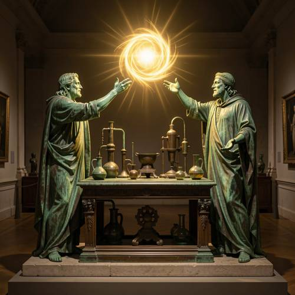
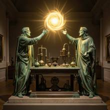
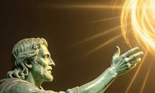
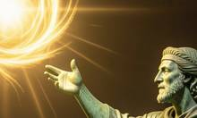

Action — Please generate a picture: a Renaissance bronze sculpture depicting tw
Please generate a picture: a Renaissance bronze sculpture depicting two alchemists performing spells across a laboratory bench, with light gathering between them.


Judge — Direct
- PASSAction - Non-contact Interaction — The image displays two figures positioned on opposite sides of a laboratory bench. They are pointing their index fingers towards each other, and in the space between their hands, there is a bright, glowing concentration of light with radiating beams and swirling energy patterns. This visually represents the non-contact interaction of performing spells.
- FAILStyle — The two central figures are rendered with a metallic texture and sheen, consistent with the appearance of bronze sculptures. However, the overall image is not a singular sculpture. The background consists of realistic stone walls and arches, and the central light effect is a luminous, non-physical element. Additionally, some items on the bench, like the glass flasks, are not depicted as part of the bronze sculpture. The image is a composition that includes bronze sculptures rather than being an image styled entirely as a bronze sculpture.
- PASSWorld Knowledge — The two figures are depicted as older, bearded men in long robes, which aligns with common visual representations of alchemists. They are in a room that resembles a laboratory, filled with shelves holding numerous glass flasks, beakers, and other chemical apparatus, which are elements strongly associated with the practice of alchemy.
- PASSAttribute - Quantity — The image clearly shows two distinct figures of alchemists. One figure is on the left side of the composition, and the second figure is on the right.
Judge — Continuum
- PASSAction - Non-contact Interaction — The image displays a sculpture of two figures, one on each side of a bench. Both figures have their hands raised towards a glowing, swirling orb of light suspended in the air between them, depicting the action of performing a spell or conjuration across the bench.
- PASSStyle — The image shows a sculpture made of a material with the appearance of patinated bronze, exhibiting a greenish-brown coloration. The figures are sculpted in a realistic, classical style with flowing robes, consistent with the aesthetics of Renaissance art.
- PASSWorld Knowledge — The figures are depicted as alchemists. This is evident from the various pieces of laboratory equipment sculpted on the bench between them, which include alembics, flasks, beakers, and other distillation apparatus commonly associated with alchemy.
- PASSAttribute - Quantity — The sculpture clearly depicts exactly two figures, both dressed in robes and positioned on either side of a laboratory bench, fulfilling the requirement for two alchemists.
What the agent did
Thinking
The user is asking for the following image: "A Renaissance bronze sculpture depicting two alchemists casting spells across a lab bench, with light gathering between them." Let me think about the composition. This is a sculpture (bronze, Renaissance style) of two alchemists on opposite sides of a lab bench, with light gathering between them. So I should depict a bronze sculpture—patina, verdigris, classical Renaissance sculptural style (think Donatello, Giambologna-esque dynamic poses)—two robed alchemists facing each other across a workbench, arms raised, casting spells, with light/glow gathering in the center between them (maybe a glowing orb of light between them, which in bronze might be represented as a polished/reflective section, or as an actual glowing element—since it's a sculpture, the "light gathering" can be artistic: a bright glow between the two figures, possibly with the bronze catching the light or an actual luminous element). The prompt says "light gathering between them"—in a photo of a sculpture, that could mean actual light/glow. Let me generate and iterate. Plan: 1. Generate with flux2-klein using a detailed prompt. 2. Inspect the results. 3. Edit as needed. 4. Mark the best. Let me write a good prompt: "A Renaissance bronze sculpture, museum display, two alchemists in flowing robes standing on opposite sides of an ornate laboratory bench, arms raised casting spells toward each other, hands outstretched, glowing light gathering in the air between their outstretched hands above the bench, alchemical vessels and flasks on the bench, dark verdigris patina bronze with warm highlights, dramatic chiaroscuro lighting, marble plinth pedestal, classical Renaissance sculptural style, fine detail." Since it's a sculpture, it should look like bronze—monochromatic metallic material with patina. The light between them could be an actual beam/glow (like in a photo where light shines between the figures) or a polished gold area. I think a visible glow/beam of light between the hands will convey "light gathering between them" the best. Let me generate at an appropriate size—maybe 1024x1024 or 1024x768? The default is 1024x1024. The prompt doesn't specify an aspect ratio. I'll stick with the default 1024x1024. Let me start generating.
Step 1 — `generate_image`
{
"model": "flux2-klein",
"prompt": "A Renaissance bronze sculpture on a stone plinth in a dim museum hall. Two alchemists in flowing robes cast bronze with green verdigris patina, standing on opposite sides of an ornate laboratory bench, facing each other with arms raised and hands outstretched, casting spells toward one another. Above the bench, between their raised hands, a bright golden light gathers \u2014 a glowing orb of radiance with swirling rays. The bench holds alchemical vessels, alembics, a crucible and flasks, also in bronze. Dramatic chiaroscuro lighting, warm highlights on the patinated bronze, deep shadows, classical Renaissance sculptural style, highly detailed, photorealistic photograph of the sculpture."
}Result img_0

Thinking
The first generation result looks very good. Let me check the details: - Renaissance bronze sculpture: ✓ Two figures in bronze/verdigris patina on a stone pedestal, in a museum hall setting. - Two alchemists: ✓ Bearded robed figures. - Performing spells: ✓ Both arms raised, hands extended toward the light. - Across a lab bench: ✓ A bench with alembics, flasks, crucibles, and other vessels. - Light gathering between them: ✓ A swirling golden orb of light between their outstretched hands. Let me zoom in and check the details — hands, faces, and whether the figures really look like a single bronze sculpture (they do look like it; the bench also appears to be part of the sculpture, with a patina applied). The vessels on the bench also look bronze-ish/green, good. Potential issues: - Left figure's face — check the detail. - Hands — check for any deformation. - The bench below the pedestal has an under-shelf with vessels, no problem. To verify the quality of the hands and faces, let me inspect a few regions. I'll check the hands and faces.
Model
The first generation looks strong. Let me inspect the details before deciding.
Step 2 — `inspect_region`
{
"image": "img_0",
"roi": [
180,
180,
480,
360
]
}Result img_1

Step 3 — `inspect_region`
{
"image": "img_0",
"roi": [
500,
180,
800,
360
]
}Result img_2

Thinking
The detailed crop looks good. The hand on the left is well rendered with clear fingers, and the face is also good. The hand on the right is also fine. Both figures look like they're made of bronze with a verdigris (green rust) patina. Checking the overall image once more: everything the prompt asks for is included: - Renaissance bronze sculpture ✓ (verdigris patina, stone pedestal, museum setting) - Two alchemists ✓ - Casting spells across a laboratory bench ✓ (arms raised, glowing orb of light) - Light gathering between the two ✓ (a swirling golden light between the outstretched hands) - Lab bench with alembics and flasks ✓ This is a good result. I'll mark this as the best. It's clear enough to submit, and no edits are needed. Mark img_0 as the best and finish up.
Model
Both crops show clean details: the outstretched hands have well-formed fingers, the face is composed in the classical style, and the green verdigris bronze is consistent throughout. All elements of the prompt are present: - **Renaissance bronze sculpture** — two robed figures in verdigris-patinated bronze on a stone pedestal, in a dim museum hall - **Two alchemists across a lab bench** — facing each other across an ornate bench crowded with alembics, flasks, a crucible, and vessels (all bronze, part of the sculpture) - **Casting a spell** — both with arms raised, hands outstretched toward each other - **Light gathering between the two** — a swirling golden sphere of radiance hovering between their hands above the bench The result matches the prompt well, so I'll mark it as the best.
Step 4 — `mark_best`
{
"image": "img_0",
"reason": "Fully matches the prompt: Renaissance bronze sculpture of two alchemists on a stone plinth in a museum hall, casting spells with raised hands across a laboratory bench of alembics and flasks, with a swirling golden light gathering between their outstretched hands. Hands and faces inspect cleanly at source resolution."
}Thinking
Done. The marked image is img_0, which is the final result. I'll summarize concisely.
Model
Done. The final image (marked as best) is a photorealistic museum photograph of a Renaissance bronze sculpture: two bearded alchemists in flowing robes stand on a stone plinth on either side of an ornate laboratory bench laden with alembics, flasks, and a crucible. Both cast their hands toward a swirling golden orb of light that gathers in the air between them, with warm chiaroscuro lighting on the verdigris-patinated bronze. **Key elements delivered:** - Renaissance bronze style with green patina, on a plinth in a museum hall - Two alchemists facing across a laboratory bench - Spell-casting poses with outstretched hands (verified up close — hands render cleanly) - Light gathering between them as a radiant golden vortex above the bench